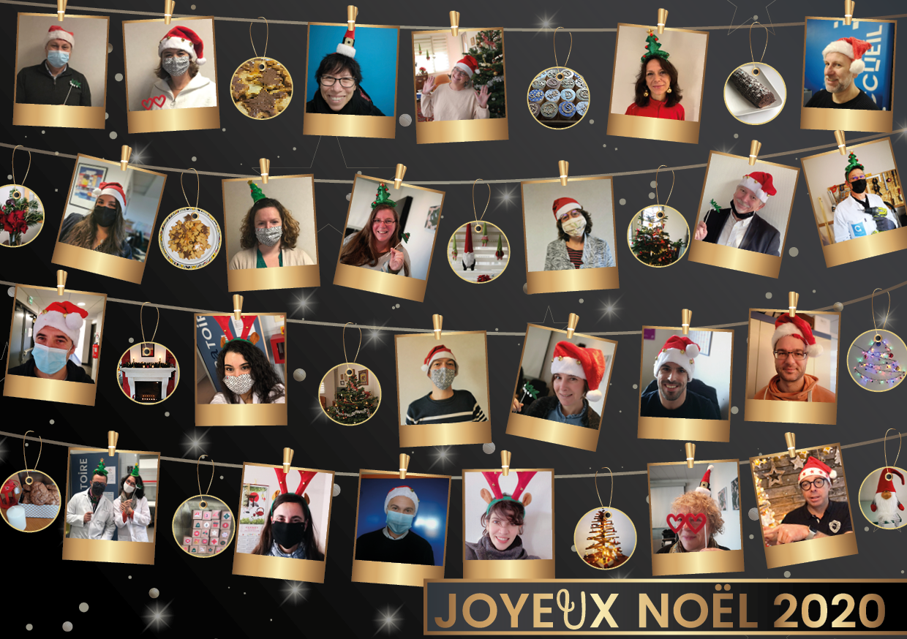
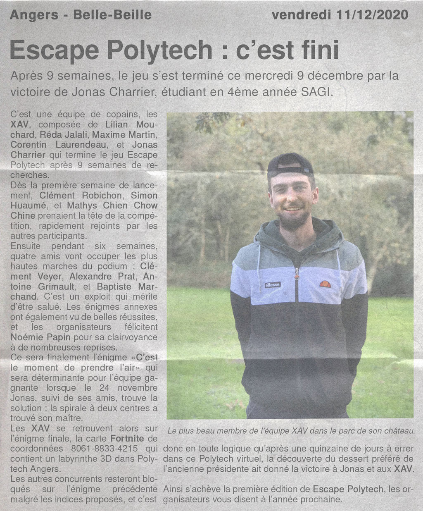
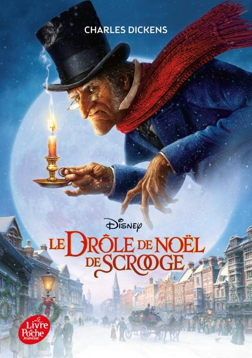
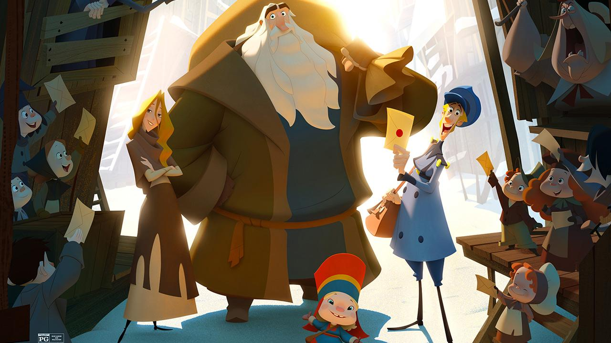

Une question que tu ne t'es sans doute jamais posée, mais à laquelle nous allons tout de même y répondre !
LES ORIGINES DE NOËL
Les origines des fêtes de Noël remontent à il y a très très longtemps. Nous allons essayer de vous les simplifier le plus possible en les découpant en 3 parties : les origines de cette période de fête, le personnage du père Noël, les origines des coutumes de Noël. Cet article a demandé beaucoup de recherches sur divers sites pour obtenir le plus d'informations possible et à mobiliser 3 journalistes pour l'écriture. On espère que vous apprécierez et que vous apprendrez un maximum de choses !
Les origines des festivités de Noël
Noël n’a pas toujours existé (désolé si cela vous déçoit). Mais par contre, cela fait bien longtemps que cette période est festive. Comme vous le savez, la Terre tourne autour du Soleil et son axe n’est pas tout à fait vertical. C’est pourquoi nous avons des saisons et 2 solstices dans l’année : le solstice d’été, le moment où les jours commencent à rétrécir et le solstice d’hiver, le moment où les jours commencent à s’allonger. Les hommes connaissent ce phénomène depuis bien longtemps et franchement, savoir que le soleil restera plus longtemps ça se fête non ?! C’est pourquoi à chaque solstice d’hiver (vers le 20/21 décembre) les hommes célébraient leurs divinités (que ce soit les romains, les vikings, les gaulois ou bien même les celtes). Les fêtes qui ont le plus influencé Noël sont les saturnales chez les romains. C’était les réjouissances envers le dieu Saturne (symbole de fertilité). Lors de ces fêtes, il était coutume de s’échanger des cadeaux, les “Strenae”, qui sont devenus aujourd’hui les étrennes.
Je ne vous apprends rien, Noël est avant tout une fête chrétienne où l’on célèbre la naissance de Jésus (d’ailleurs messe du Christ = Christ mass = Christmas). Cette fameuse date de naissance est bien connue : le 25 décembre de l’an 1. Pourtant, aucun écrit n’a jamais indiqué de date. Il semblerait même qu’en regardant la chronologie de certains événements bibliques, Jésus serait né en l’an -8 (paradoxal n’est-ce pas ?). Mais dans ce cas, pourquoi la date du 25 ?
Cette date du 25 décembre n’est pas choisie au hasard, elle est choisie arbitrairement au IVème siècle quand il y avait les fêtes païennes. En effet, à l’époque, la religion chrétienne n’était pas encore bien implantée en Europe et pour faire perdre les “mauvaises” coutumes aux peuples, rien de mieux que d’en créer de nouvelles. On a élucidé le mystère de la date, mais qu’en est-il du reste ? D’abord, il faut noter qu’au IVème siècle, mis à part la messe de Noël (qui ne s’appelait d’ailleurs pas encore comme cela), il n’y avait pas de Père Noël, ni de cadeau le 25. Il fallait encore attendre quelques siècles avec St Nicolas, aussi appelé Nicolas de Myre. Cet évêque, originaire de Turquie, serait né en 270 et mort en 345. Il est à l’origine de nombreux miracles et dons, qui lui ont valu d’être canonisé et d’être célébré le 6 décembre à partir de l’an 1000. Au XIIème siècle, il était associé au symbole de protecteur des enfants (allant même jusqu’à leur distribuer des cadeaux) grâce à une de ses légendes les plus connues. Dans celle-ci, il ressuscita trois enfants qui avaient été tués par un boucher voulant les manger (ce boucher est d’ailleurs devenu le croque-mitaine / père fouettard, le symbole présenté aux enfants pour leur faire peur et ainsi les rendre plus sages). C’est vers ces années qu’il y avait une “distribution” de cadeaux dans les familles les plus aisées.
Les éléments commencent à se goupiller et pourtant, il n’y a pas encore de “fête de Noël” à proprement parler. Au XVIeme siècle, il y a eu la réforme protestante qui a freiné l'élan net en interdisant la célébration de plusieurs icônes chrétiennes, dont St Nicolas. Alors que tout semble perdu, à la fin du XVIeme siècle, avec un nombre important d’émigrants européens vers l’Amérique, les légendes et les histoires sont amenées sur ce nouveau continent. Ces légendes se font discrètes au début. Mais en 1821 avec le poème “Old Santeclaus with Much Delight" et en 1823 avec la parution du poème “A Visit from St. Nicholas” écrit par le pasteur Clément Clarke Moore, l’évêque généreux qu’est Saint Nicolas se métamorphose en une personne vêtue de rouge distribuant des cadeaux la nuit du 24 décembre (changeant ainsi la date du 6 initialement). Cette histoire s’est propagée à grande vitesse et s’est popularisée après la première guerre mondiale. C'est l'origine de Noël telle qu’on le connaît.
Les origines du personnage
Le Père Noël, personnage phare de Noël a plusieurs origines. On pourrait ainsi remonter aux Dieux Nordiques avec Thor, vêtu de rouge. Il avait un traîneau tiré par des chèvres, ou encore Odin chevauchant Sleipnir, son cheval à 8 pattes (comme les 8 rennes du traîneau du Père Noël). Bref, on trouve beaucoup de liens/références des divinités de l’ancien temps sur le Père Noël d'aujourd'hui. Reprenons quelques éléments de l’histoire de Saint Nicolas pour commencer (personnage qui a le plus influencé l’icône du Père Noël).
Il est arrivé pour la première fois en France, dans le Nord, en Lorraine grâce à un chevalier. Celui-ci ramenait une phalange de St Nicolas chez lui comme relique, ill fut alors célébré en Lorraine, puis devint connu dans toute la France comme “Père de la nativité” et protecteur des enfants.
Au 16ème siècle, comme mentionné précédemment, il y a eu la réforme protestante, la fête célébrant le personnage disparut et seule la célébration de Jésus était commune aux chrétiens à cette période de l’année. Ainsi, une partie des protestants uniquement, principalement issus des Pays-Bas / Allemagne, gardèrent la célébration du Saint Nicolas et la distribution de jouets. St Nicolas se disait Sinter Klass. Lorsque les colons hollandais s’installèrent aux États-Unis, Sinter Klass devint Santa Claus, et sa célébration se transmit au fur et à mesure dans les foyers des colons. Elle finit par être associée au 24 décembre et à la naissance du Christ.
Le personnage actuel du père Noël a fait son apparition avec les poèmes “Old Santeclaus” (1821) et “A Visit from St. Nicholas” (1823). Le personnage est décrit comme un vieil homme, apportant des cadeaux aux enfants sur son traîneau tiré par des rennes. Le personnage sera repris par la suite par de nombreux journaux, et son image sera fixée par les illustrateurs John Tenniel et Thomas Nast, qui le représentent comme un vieillard rondouillard, avec une ceinture de cuir, un bonnet rouge, distribuant des jouets aux enfants.
Finalement, c’est Coca-Cola qui va finir d'asseoir l’image du Père Noël dans le monde entier. Grâce à une campagne de pub représentant le Père Noël, publiée en 1931, le personnage devient mondialement connu. Et contrairement à la légende, Coca-Cola n’a pas rendu le Père Noël rouge, il l’était déjà auparavant, mais ils ont permis de populariser l’image de ce personnage qui n’était pas nécessairement connu dans tous les foyers.
Les origines des coutumes de Noël
Maintenant que vous connaissez l’histoire sur les origines de la fête, puis du personnage, on va s’intéresser à plusieurs coutumes bien connues à Noël.
Les cadeaux :
L’origine des cadeaux de Noël remonte à l’antiquité, durant l’époque romaine. Lors du solstice d’hiver, il était coutume d’offrir des cadeaux sous forme de nourriture ou d’argent, afin de célébrer la fin de l’année et de porter chance pour les mois à venir. Par la suite, on y associe l’origine de ces cadeaux aux rois mages, qui offraient des cadeaux le 6 janvier au Christ. On l’associe aussi à St Nicolas, apportant des cadeaux aux enfants sages le 6 décembre. La distribution des cadeaux s’est ainsi démocratisée, les magasins ont alors commencé à faire de la publicité afin de réaliser un chiffre d'affaires plus important. Noël est ainsi devenu une fête consumériste.
Le sapin :
Les premières traces de vente de sapin en période de fête remontent à 1521 en Alsace. Cette tradition aurait été inventée par les protestants, voulant alors se distinguer du catholicisme et de leur représentation de la nativité par une crèche. Cette tradition se serait alors rapidement répandue au sein de l’Eglise protestante des pays d’Europe de L’Est. En France, on doit l’arbre de Noël à Marie Leszynka qui n’est autre que la femme de Louis XV. Cette véritable héroïne polonaise a donc ramené la coutume de son pays à Versailles, puis dans toute la France.
La bûche :
Que serait Noël sans une bonne bûche au dessert ?! Mais d’où ça vient ? Cette dernière est associée aux rituels païens. À cette époque, on célébrait la renaissance du soleil en brûlant des bûches en bois. Si vous en avez marre de faire la danse du soleil en cette période froide, on vous a trouvé une nouvelle alternative. On doute néanmoins que ça marche : n’essayez pas ça à Noël, vous aurez sans doute du mal à faire flamber la bûche glacée… Finalement, le célèbre dessert tel qu’on le connaît n’apparaît que bien plus tard, à priori au XIXème siècle grâce au savoir-faire de la pâtisserie française. Depuis, les sorcières (et Jeanne d’Arc) n’en ont plus peur, elles en raffolent !
Les boules :
… de noël, elles sont de plus en plus jolies et sophistiquées. Pourtant, jusqu’au XIXème siècle, la déco était beaucoup plus écolo. Et oui, on accrochait des fruits au sapin… plutôt sympa/sapin non ? Cette déco naturelle symbolisait alors une offrande aux dieux. On privilégiait d’ailleurs les pommes, en rappel à l’arbre du paradis. Mais qu’est-il arrivé pour que cette idée, à première vue extravagante, disparaisse ? En 1858 a lieu une grande sécheresse qui affecta la récolte paysanne. C’est alors l’occasion pour un artisan verrier de Moselle de fabriquer des boules en verre afin de remplacer les fruits. Allez, on vous invite maintenant à remettre les anciennes coutumes au goût du jour en proposant votre version du sapin comestible.
Les chaussettes accrochées à la cheminée :
Cela vient de la légende de Saint Nicolas. Il est dit que ce Saint, touché par la misère de trois sœurs, fit glisser des pièces d’or par la cheminée de leur maison. Et ces pièces seraient tombées dans les chaussettes des filles qui séchaient auprès du feu. Depuis, les pièces d’or ont été remplacées par des cadeaux, worth it ?
Maintenant que vous avez appris les origines de Noël, vous pourrez vous la péter lors de votre repas de famille !
Sitographie : Origine du Père Noël | Origine des cadeaux de Noël | Le Père Noël et Coca-Cola | Nicolas de Myre | St Nicolas | Vidéo : C’est pas sorcier | Le monde (vidéo) | Origine des cadeaux de Noël | Origine des traditions de Noël | Histoire du sapin de Noël
-- Yohann Hirrien, Thomas Lépine, Gaëtan Marie
Des news à ne pas manquer !
Crash chez Space X !
Un nouveau lancement Space X a eu lieu ce mercredi 9 décembre ! Il s’agissait d’un test de vol du nouveau prototype Starship qui devra à l'avenir s’assurer du lancement d’un véhicule lourd permettant le transport d'humains et de fret. L'objectif de cet essai était d’atteindre l’altitude de 41000 pieds puis de ré-atterrir en un seul morceau. Malheureusement, tout ne se passe pas toujours comme souhaité et Starship nous a offert une belle explosion à son atterrissage ! Quelques points positifs tout de même : la fusée n’était pas habitée et la compagnie a annoncé avoir récolté toutes les données nécessaires pour poursuivre le développement de Starship !
Sitographie : Le monde
Star Wars revient en force !
Une fois la nouvelle trilogie de Disney terminée, les fans de Star Wars ne savaient pas forcément à quoi s’attendre pour les futurs productions. La nouvelle série The Mandalorian plait à beaucoup de fans et semble remplir les exigences d’une bonne partie de la communauté. Récemment, ce n’est pas une mais bien 10 séries plus un film qui ont été annoncés ! On retrouve dans cette annonce des séries attendues depuis quelque temps comme celle centrée sur Obi-Wan, mais aussi des séries que personne n’attendait ! Un nouveau film : “Rogue Squadron” fait aussi partie de l’annonce. Niveau Star Wars, on risque d’être servi !
Sitographie : FranceTvInfo
-- Lucas Percereau
Cyberpunk 2077 est sorti après 8 ans d’attente !
Il est là, il est sorti ! Cyberpunk 2077 ! Après avoir été révélé en mai 2012 sous le nom de projet “Cyberpunk”, le studio officialise le titre du jeu : Cyberpunk 2077 en octobre 2012.
En janvier 2013, le studio dévoile le premier teaser du jeu. La sortie du jeu est alors repoussée à une date inconnue, mais est attendue par la presse pour 2015, voire 2016.
En juin 2018, le jeu est présenté à l'E3. Lors de l’événement, il est annoncé que celui-ci se jouera intégralement en FPV afin de renforcer l'immersion du joueur. A la Gamescom cette même année, le studio annonce que Cyberpunk 2077 est jouable dans son intégralité, bien que de nombreux éléments soient encore à réaliser ou modifier.
En juin 2019, à l'occasion de la conférence Microsoft lors de l'E3 2019, une bande-annonce du jeu est présentée, avec à la fin de celle-ci la présence de Keanu Reeves en tant que personnage. La sortie est annoncée pour le 16 avril 2020 sur PC, Xbox One, PS4 et Stadia.
Fin janvier 2020, CD Projekt RED s'adjoint l'aide de QLOC pour terminer le développement du jeu. Le même mois, CD Projekt RED annonce, via son compte Twitter, que sa sortie est repoussée au 17 septembre 2020, expliquant que celui-ci est dès à présent intégralement jouable mais que le studio a besoin de plus de temps pour le tester, y apporter des correctifs et le peaufiner, ayant pour objectif de le rendre « parfait ». La date est à nouveau repoussée au 19 novembre, pour les mêmes raisons que précédemment. Le 27 octobre, le titre est une nouvelle fois repoussé, au 10 décembre 2020, pour sortir l'ensemble des versions (PC, Xbox One, PS4, Xbox Series, PS5 et Stadia) le même jour.
Malheureusement, à peine sorti, la version console a beaucoup été critiquée autant pour son aspect graphique que pour le nombre de bugs qu’elle contient. En effet, sur les versions PS4 et Xbox One, la partie graphique semble être à la ramasse. La note moyenne de 6/20 donnée par les utilisateurs de ces consoles sur jeuxvideo.com montre bien le fait que la hype n’aura pas suffit pour satisfaire les joueurs. On peut aussi regretter la surabondance d’objets sexuels présents dans le jeu qui, pour certains, rajoutent un défaut à ce jeu déjà surcoté. Conséquence : en 24 heures, le studio a perdu près d’un milliard de dollars en bourse.
Coup fatal sur ce projet qui a mis 8 ans à sortir de terre ou seulement un lancement compliqué ? Des mises à jour sont déjà prévues pour corriger certains aspects du jeu mais cela suffira-t-il ? Seul le temps nous dira si CD Projekt RED survivra à cette passe compliquée.
Je tiens cependant à dire que les joueurs PC sont quant à eux mieux servis et ont eu un avis plus favorable au jeu avec une note de 11.6/20, mais qui reste probablement loin des attentes du studio.
Sitographie : Page du jeu sur Jeuxvideo.com |Article sur les pertes de CD Projekt RED |Article de 20minutes sur les défauts du jeu
-- Maxime Duc
Portrait sur des personnages emblématiques provenant d'histoires
Le Père Noël :
Le Père Noël, aussi connu sous le nom de Santa Claus, est sorti de nulle part en 1821. Dès son apparition, il avait l’apparence d’un vieil homme avec une barbe blanche. Il se balade le soir de Noël sur un traîneau tiré par 8 rennes : Tornade, Danseuse, Furie, Fringant, Comète, Cupidon, Tonnerre et Éclair. Ses rennes ont chacun des particularités propres associées à leur prénom. Il en ajoutera un neuvième à son équipage, en 1939. Celui-ci s’appelle Rudolph et a la caractéristique d’avoir un nez rouge, ce qui permis au Père Noël de pouvoir se repérer lors de sa tournée alors qu’une tempête de neige faisait rage.
Le Père Noël a vécu pendant un temps au pôle Nord, afin de pouvoir cacher sa fabrique de jouets sous la glace du pôle durant l’été. Cela lui permettait aussi d’être à équidistance de chacun des continents de l’hémisphère Nord, facilitant la distribution de cadeaux. Mais l’environnement hostile du Pôle Nord n’était pas très favorable pour ses rennes, qui avaient des difficultés à trouver à manger. Il lui était aussi plus difficile d’atteindre les continents de l’hémisphère Sud. Ainsi, il décidit, en 1927, de déménager en Finlande, plus précisément au Mont Korvantunturi. Il put ainsi livrer ses cadeaux au monde entier, cacher son usine de jouets sous le Mont Korvantunturi et nourrir ses rennes.
Mais le Père Noël n’est pas seul. Son épouse Mère Noël l’accompagne dans son aventure. Elle l’aide lors de Noël et répond aux lettres des enfants.
Il est aussi accompagné de nombreux lutins qui, à l’approche de Noël, l’aideront à préparer les cadeaux des enfants. Ces lutins viendraient des pays scandinaves. Ils travaillent pour le Père Noël toute l’année, s’occupant des cadeaux, mais aussi des rennes, du traîneau et peuvent assister le Père Noël dans la distribution des cadeaux…
Le Père Noël n’a pas toujours été rouge. En effet, entre 1821 et 1863, il a de nombreuses fois changé de costume. On peut ainsi le retrouver en vert, gris et même violet. C’est en 1863 qu’il a définitivement adopté le costume qu’on lui connaît, rouge et blanc avec une ceinture de cuir. En 1930, afin d'asseoir sa célébrité à travers le monde entier (et parce qu’il aime cette boisson), il décide de participer en tant qu’acteur à la campagne de pub organisée par Coca-Cola, qui le rendra, lui et son image, célèbre dans le monde entier.
Bien sûr, le Père Noël ne travaille pas toute l’année, mais seulement en décembre. Ainsi, sur les 11 mois restants, il part voyager un peu partout dans le monde et il lui arrive de s’installer dans ses résidences secondaires comme sa résidence d’été située à Val-David dans les Laurentides, au Québec. Il y a élu domicile dès 1953, année où il y est arrivé en hélicoptère. Il lui arrive d’y recevoir de la visite. Il dispose aussi d’une résidence secondaire dans le pacifique, un atoll nommé « Île Christmas ». Enfin, il disposerait d’un troisième lieu situé dans la région d’Antalya, en Turquie.
Durant tout le mois de décembre, en plus d’organiser la fabrication des cadeaux, il se balade dans les différents centres commerciaux, marchés de Noël et autres, afin de rencontrer les enfants et de leur distribuer des friandises.
Pour lui envoyer votre liste de cadeaux de Noël, vous pouvez lui écrire à son adresse actuelle du Mont Korvantunturi, en Laponie. Le Père Noël, la Mère Noël et son équipe de lutins se feront un plaisir de vous répondre.
Sitographie : happyfete Noël Vert Wikipédia
-- Yohann Hirrien
La rubrique pour être tenu informé sur ton école préférée !
Tout le personnel de Polytech Angers vous souhaite un joyeux Noël !
Escape Polytech : le magot a été trouvé !
Article réalisé par Alain Godon
-- Thomas Lépine
Nos spécialistes ont regardé les étoiles à l'aide de leur microscope pour découvir ce qui vous attend dans le mois !

QIF :
Vous demandez un stage au Père Noël. Malheureusement, votre lettre se perdra et vous recevrez un poney. Vous passerez vos 6 mois de stage à vous entraîner et deviendrez champion équestre, catégorie lasagne.
SAGI :
Vous vous ferez chier durant votre repas de réveillon et lancerez un débat afin de raviver les discussions : pain au chocolat ou chocolatine ? La police sera obligée d’intervenir.
BEMS :
Les cheminées sont trop petites pour le Père Noël. Vous les reconcevrez plus large. Mais n’ayant pas mis en place de système de ralentissement de chute, le Père Noël tombera et se cassera le coccyx. Vous le remplacerez alors et réussirez à livrer trois maisons avant de vous écrouler de fatigue.
GBS :
Vous laisserez un cookie et un verre de lait au Père Noël. Malheureusement, votre chien les mangera avant lui. Le Père Noël mécontent vous laissera en guise de cadeau une orange périmée, datant de 1960. Bon appétit !
PEIP :
Vous n’avez pas été sage cette année et n’aurez pas de cadeau. Vous décidez donc de prendre en otage le Père Noël en l’endormant. Vous ferez la joie des parents qui n’en peuvent plus d’entendre les jouets bruyants de leurs enfants.

-- Yohann Hirrien
L'info retournée et 100% non vérifiée !
Pour cette édition spéciale Noël, nous aurions pu nous intéresser à savoir si la chloroquine est un bon cadeau de Noël, ou bien à un sujet qui semble tout particulièrement vous préoccuper : « devons-nous se limiter à un seul oncle beauf cet année ? ». Mais cette dernière question nous a poussée à privilégier un autre sujet tout aussi intéressant :
Fendre en deux le crâne de son oncle beauf lui permettra-t-il de devenir ouvert d’esprit ?
Si nous devions répondre simplement à la question, la réponse serait « oui », mais nous vous déconseillons de le faire, car cela pourrait être passible de plusieurs années de prison … Cela reste un meurtre, sauf si vous vous loupez lamentablement … Bien évidemment, pas vu, pas pris ! (Nous vous conseillons également d’aiguiser votre hache juste avant et de vous entraîner sur des bûches en bois).
Maintenant, si nous regardons la question plus en profondeur, il est à noter que, d’après Wikipédia, le cerveau n'est qu'une sorte de « terminal » qui opère l'interface entre l'esprit (immatériel) et le monde des cinq sens (matériel). Une simple hache ne permettrait alors pas de réussir à ouvrir son esprit qui n’est pas quelque chose de palpable.
D’après nos experts en la matière, si vous souhaitez « ouvrir l’esprit » de votre oncle beauf, rien de mieux que de « le faire avec des mots en le raisonnant ». Tout en rajoutant que « s’il devient trop lourd après avoir trop bu, les mots ne serviront à rien. Nous vous conseillons alors de l’enfermer dans la cuisine tout en faisant revenir vos grands-parents qui y étaient à votre table ». Bref, c’est sûr ces belles paroles pleines de bon sens que nous achevons cet article.

N’oubliez pas, le meurtre ne résoudra jamais rien, mais surtout, vérifiez qu’il n’y ait pas de
serpent dans votre chaussette de Noël, bon appétit et à la prochaine !
-- Thomas Lépine
Préparez votre canapé, on vous conseille sur quoi bouquiner !
Le Drôle de Noël de Scrooge (Un chant de Noël) – Charles Dickens
Résumé
Dans l’Angleterre des années 1840 vit Ebenezer Scrooge, un vieil homme solitaire et égoïste qui ne pense qu’à l’argent. Ne partageant pas la joie de Noël, il décide de passer comme chaque année cette fête seul malgré l’invitation de son neveu. Mais, à la veille de Noël, le fantôme de son ancien associé apparaît pour le prévenir que trois esprits vont venir le hanter. Ces esprits lui feront voir son passé, son présent et son avenir pour le prévenir des risques s’il continue à agir de la sorte.
Critique
J’ai trouvé ce conte de Noël sympathique et en total accord avec la période. Avec ses descriptions, Dickens nous plonge dans une ambiance de Noël « merveilleuse ». De beaux messages sont passés à travers cette histoire.
Note : 7/10
-- Caitlin Jolivet
Installez-vous confortablement, on va vous éclairer sur ce que vous ne devez pas manquer !
Klaus
Pour cette édition, j’ai décidé de parler d’un film qui m’a particulièrement touché, réalisé par Sergio Pablos en 2019 : Klaus. Ce n’est pas dans mon habitude de parler de films d’animation (bien qu’il en existe énormément de très bons / excellents), mais j’ai pensé que cela collerait à merveille pour cette période de fêtes un peu particulière.
Synopsis :
Notre héros Jesper, alors qu’il souhaitait devenir postier, a vu sa nullité ou plutôt son manque d’envie flagrant forcer son père à prendre une décision radicale. Afin de lui apprendre les bonnes manières, il l’envoya dans un village glacé et sinistre, perdu sur une île située au-delà du cercle arctique pour y assurer le rôle de facteur où aucun autre postier ne souhaitait s’y aventurer. Ses premières missions s'annoncent ardues car les habitants se détestent violemment. Alors qu'il perd espoir, le jeune facteur fait la rencontre de Klaus, un étrange homme aussi morose qu'imposant. À eux deux, ils parviendront peut-être à réchauffer le cœur des villageois en offrant des jouets aux enfants. « Une action désintéressée appelle toujours une autre. »
Critique :
Rares sont les films de Noël à proposer un véritable moment de magie et pour moi Klaus en fait partie. Sur le papier ce n’est qu’un outsider et pourtant, il réussit à nous embarquer dans son univers bien plus rapidement que l’on ne pourrait imaginer. Il rivalise avec les plus grands Pixar, Disney et DreamWorks. Cet humble conte de Noël sort des sentiers battus habituels avec une histoire complètement nouvelle, complètement novatrice sur les origines de Noël ! Je conseille ce film qui saura, je l’espère, réussir à vous divertir et vous faire replonger dans votre âme d’enfant un bon instant. Bref, tout ce que l’on peut souhaiter en cette période bien compliquée.
Note : 8/10
-- Thomas Lépine
Le Pôle Express
Synopsis :
C’est la nuit de Noël et tous les enfants se couchent, pleins d’impatience à l’idée de découvrir bientôt sous le sapin les cadeaux déposés par le Père Noël. Tous ? Non, parmi eux, un petit garçon doute… Le Père Noël existe-t-il ? Il n’en est plus très sûr ! C’est alors que sa chambre est agitée par des tremblements intenses et qu’un train fait irruption devant sa maison : le Pôle Express est venu le chercher pour l’emmener tout droit au Pôle Nord. Ce voyage marque pour lui le début d’une nuit pas comme les autres, à la fois effrayante et pleine de rencontres magiques qui vont changer à tout jamais sa vision de Noël…
Critique :
Ce film est un classique des films d’animation des années 2000. Réalisé et écrit par Robert Zemeckis, il s’agit de l’adaptation du roman “The Polar Express” de Chris Van Allsburg. Dans les acteurs de performance capture, on retrouve dans le rôle du héros principal Josh Hutcherson (oui oui, l’acteur de Hunger Games !) et Tom Hanks en tant que père du héros, Père Noël, Scrooge, vagabond et surtout du chef du train. Ce que l’on peut dire c’est qu’il a quand même pris un sacré coup de vieux ! Pour le début des années 2000, c’était un sacré bon film, mais en 2020, le rendu laisse à désirer. Cependant, si on efface ce détail, on a un très joli film qui parle de perte et regain de croyance au Père Noël.
Je suis un enfant des années 2000. J’ai ainsi grandi et découvert ce film à sa sortie. Mes parents m'avaient d’ailleurs offert le DVD du film. Je l’ai regardé à nouveau récemment et effectivement, graphiquement, c’est assez perturbant… On peine à se projeter dans les émotions des personnages. Mais pour ce qui est de l’histoire, elle est toujours aussi plaisante à suivre. Je conseille ce film aux personnes nostalgiques de l’époque où ils attendaient leurs cadeaux avec impatience le soir de Noël, mais aussi à toutes les personnes désireuses de revoir un bon film de Noël sous une couverture bien chaude ! (PS : La note que j’ai donnée à ce film a été fortement influencée par le fait que ce film me replonge toujours autant en enfance)
Note : 7.5/10
-- Maxime Duc
Le Grinch
Synopsis :
Au sein d’un flocon de neige se trouve la ville de Chouville. Cette ville est peuplée de petits Choux, préparant Noël avec joie et ferveur. Mais au-dessus, au sommet du mont Crumpit, vit le Grinch, accompagné de son chien Max. Ce Croque-Mitaine aux poils verts déteste Noël depuis sa plus tendre enfance et s’amuse à effrayer et martyriser les habitants de Chouville. Mais un beau jour, peu avant Noël, Cindy-Lou, une enfant de Chouville, rencontre le Grinch. Elle se prend alors d’affection pour cet étonnant personnage et fera tout son possible pour lui refaire découvrir l’esprit de Noël.
Critique :
Le Grinch est un film de Noël sympathique et décontractant. Il aborde Noël avec légèreté et humour. Le personnage du Grinch est très bien interprété par Jim Carrey, qui nous réjouit de nouveau avec ses mimiques et sa gestuelle. Ce film permet aussi de mettre en avant l’esprit de Noël (les retrouvailles, la simplicité, …), qui était alors étouffé par le consumérisme.
J’ai bien aimé ce film, joyeux et bon enfant. Il permet de passer un bon moment sans prise de tête.
Note : 7/10
-- Yohann Hirrien
Faites des mèmes pas la guerre !
OHOHOH, le Père Fouettard vous as concocté une édition de Noel exceptionnelle avec un peu d'actualité, un soupçon de scolaire et surtout une bonne dose de fêtes de fin d'année
Nous utiliseront 3 mentions :
- [OC] : Original Content, un mème créé par un membre de l'équipe Alligator News,
- [OCBR] : Original Content By a Reader, un mème créé par un étudiant de Polytech Angers,
- Stolen : un mème chiné sur internet.
 |
 |
| Stolen de Alexandre Durand | Stolen de Tristan Durand |
| [OC] Collaboration Thomas Lépine/Clément Robichon dans le cadre d'une passation de pouvoir 5A Peip2 | [OC] de Clément Robichon |
 |
|
| [OCBR] de Axel Moribon | Stolen de Val Ouche (nom sur facebook) |
-- Votre génial Clément ROBICHON (petit "nouveau" au club)
Le mot de la fin ...
Voici la fin de cette septième édition 😭 ... Mais, l’aventure n’est pas finie, séchez donc vos larmes
d’alligator, parce que nous serons très très vite de retour avec du nouveau contenu ! 🐊
On espère que vous avez appréciez cette édition spéciale Noël 🎅🏻 ! On se retrouve le mois pochain pour la première éditon de l'année 2021 : l'édition #8 !
PS : Si vous êtes intéressé pour rejoindre l’équipe, vous connaissez la chanson, envoyez nous un message par e-mail, Facebook, ... On a besoin de vous pour continuer d'exister l'année prochaine !
-- L'équipe Alligator News